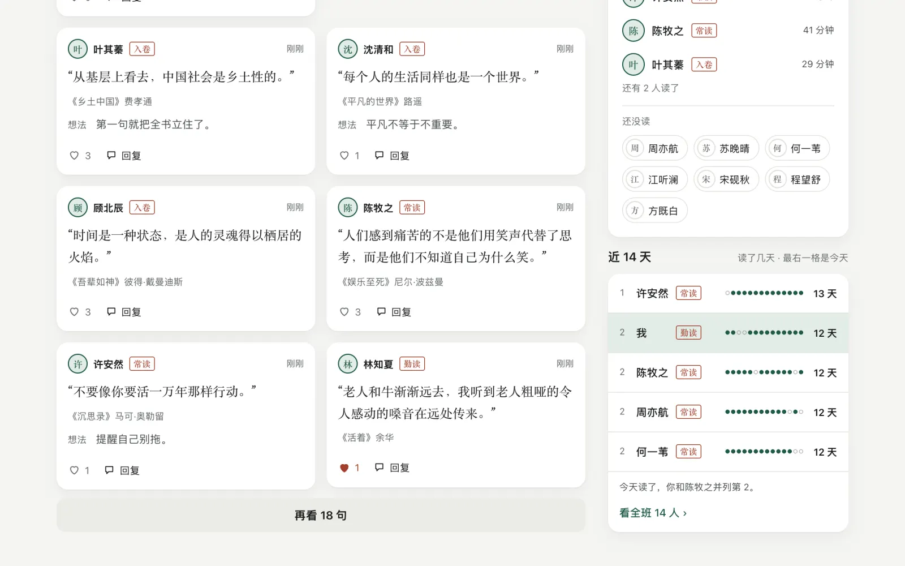
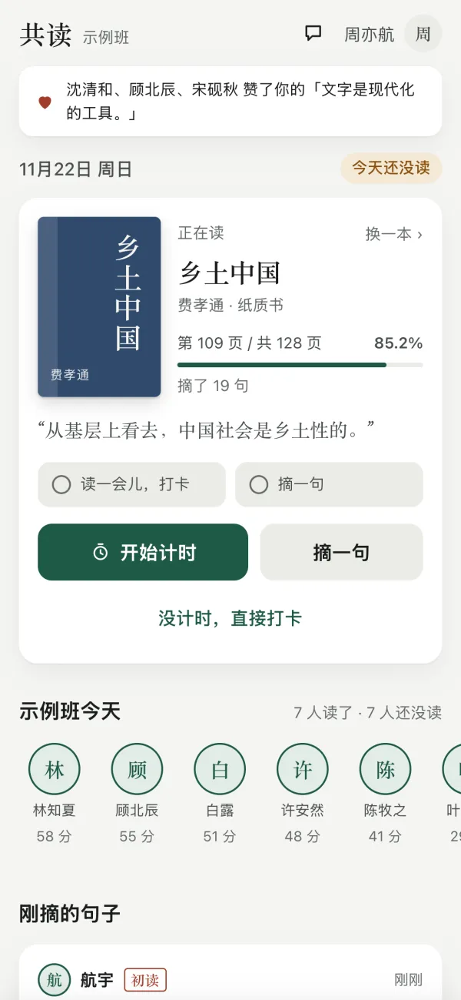
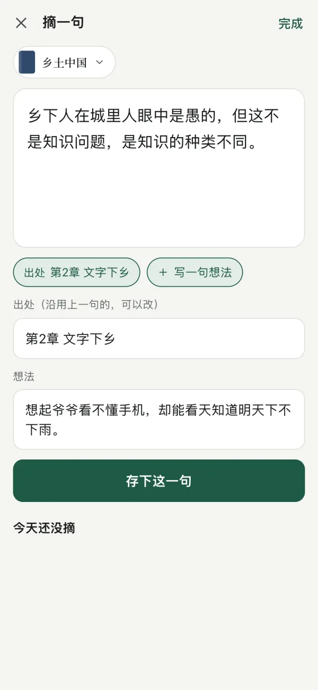
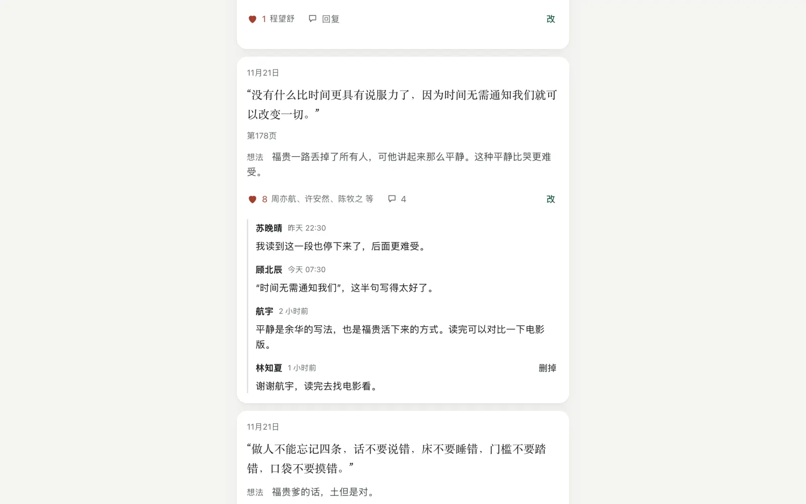
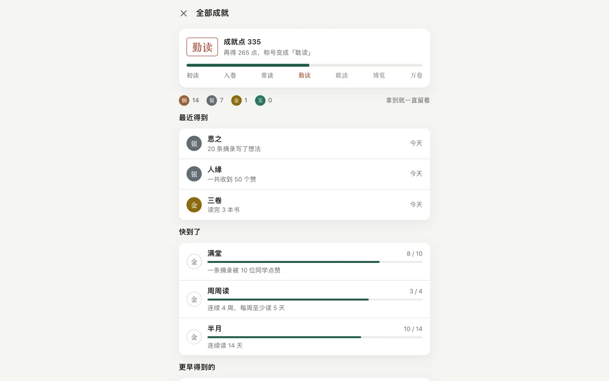
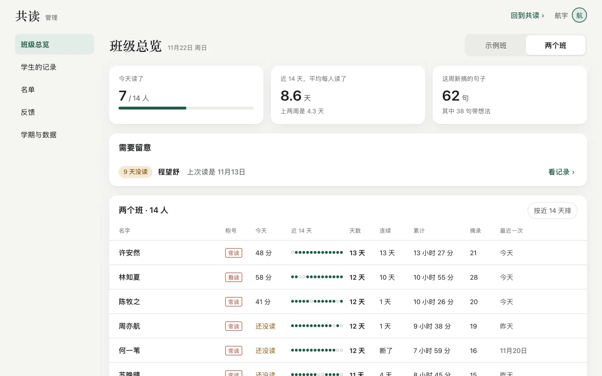
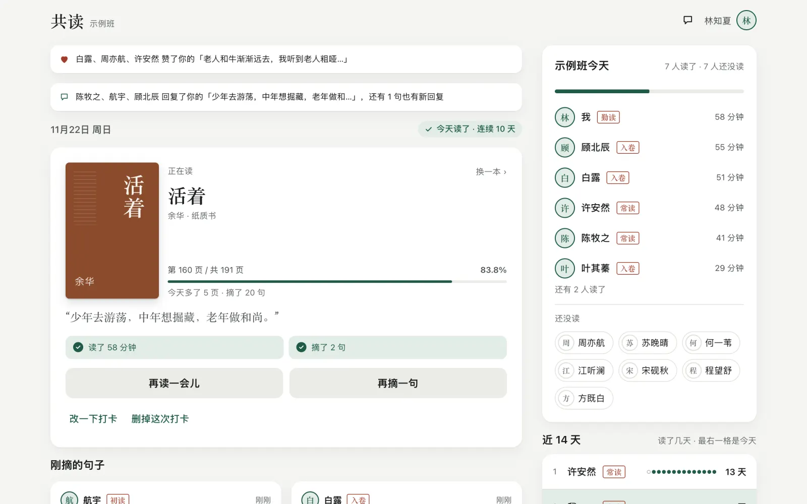

共读Read Together
这学期我在两个班里做一个实验：让平时不怎么读书的大学生，每天读一点。共读是那个每天打开的地方：记下读了多久、读到哪里，摘一句话，写一句自己的想法。全班都能看到谁今天读了、在读什么书、摘了哪一句。
An experiment this term: getting university students who rarely read to read a little every day. Each day counts once you save a line and a thought, and the class can see what everyone is reading.

- 用的人
- 两个班的学生，和我自己
- 一天算读过
- 分钟 + 读到哪里 + 至少一句摘录
- 设备
- 大多在手机微信里打开
- 做法
- Node 标准库 + SQLite，无第三方依赖
它怎么用How it works
- 开始计时在读的那本书就是首页上的一张卡片，点一下开始计时。
- 摘一句把打动你的那句话贴进来，写一句自己的想法。一天可以摘很多句。
- 写读到哪里一个框，填阅读器上显示的什么都行：45%、123/456、第 88 页。
- 看看同学班级页上是大家刚摘的句子。可以点赞，也可以回一句。
长什么样What it looks like







截图里是演示数据，名字都是编的。 Screenshots use demo data with made-up names.
为什么做Why I made it
我越来越相信，用好 AI 最重要的能力是语言能力，而训练语言最重要的办法就是阅读。可是你跟学生说“请大家去读书”，几乎没有人会去读。我问过很多同学大学四年读了几本书，很多人一本都没读过。
我不怪他们。短视频一打开就很难停下来，注意力被切得越来越碎。想让他们读书，就需要一点外力，而且这个外力要做得很巧。
我觉得读书这件事情其实有时候是需要一个氛围的，就如果你身边的人都在读，那你肯定也在读。……这是大家的隐私，每天读了多长时间，我们要不要放出来？但是我觉得在现阶段，我选择了稍微野蛮一点。也许你今天并不想读，但是看见有人读了，那你也会去读。
“专业标签之外”沙龙 · 2026.11.18
为什么一定要摘一句、写一句想法？因为你觉得一段话好，一定有你的理由。把那个理由写下来，读书才真的发生在你身上。
第一版上线之后，有天晚上我自己注册成学生用了一次，直接崩溃，受不了。那天夜里我把它从设计到后台整个重做了一遍，现在你看到的是第二版。
读书这件事情对他们来说，我觉得比对我的意义可能还要大。我至少现在能意识到读书很重要，但我觉得他们很多人还意识不到，所以我设计了这样一种 push 机制。
语音日记 · 2026.11.16
几条刻意的规则Rules on purpose
- 没有摘句，不算读过。只记分钟太容易糊弄，也太容易变成任务。摘下一句话，说明你真的停在某一页上了。
- 排名是故意留着的。按“近 14 天读了几天”排，不按累计分数排：分数只涨不跌，早开始的人会永远在前面；14 天的窗口让每个人随时都能追上来。被同学看见“他最近一直在读书”，是一件好事。
- 我也在里面读。我出现在每个班的名单里，和学生一样打卡、被点赞，不算排名。
- 不能补卡。过去的日子不能补、不能改，今天的可以改。
- 不止一个入口。除了网页，还可以用 Obsidian 插件从电子书阅读器里一键打卡，或者让自己的 AI 助手替你提交。
怎么做的How it is built
后端只用 Node 自带的标准库和 SQLite，前端是不需要构建的原生 HTML 和 JavaScript，校园网加载不了网络字体，所以只用系统字体。界面先在 Claude Design 里画了 23 张图，再照着做出来。研究用的数据只导出同意参与的同学，名字换成编号。